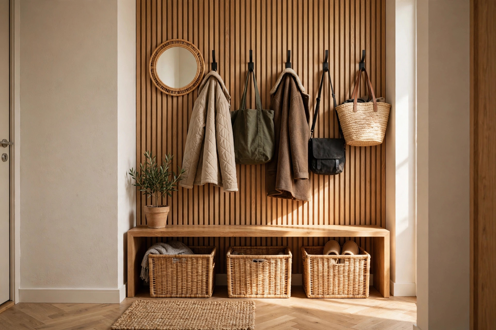

Small Space Storage & Organisation
Small Apartment Entryway Storage Ideas for Coats and Bags
Intro
The entryway in a small apartment is often not a room at all — it is a metre of wall by the front door where coats, bags, keys and shoes all have to live. When it has no system, coats end up on chairs, bags on the floor, and keys lost every morning. When it has a system, the whole flat feels calmer the moment you walk in.
This guide has 12 entryway storage ideas for coats and bags — hooks, a rail, a basket and a small bench with storage. Each idea lists what it costs, and most are under $25. The entryway needs only three things: a hook per person, a place for bags, and a place for keys.

1. One hook per person — $6–$10
Give every person in the flat one hook, at a height they can reach. Four adhesive hooks cost about $8 and fit in five minutes. One hook per person stops coats from piling on a single hook until they fall off. Children get a lower row of hooks, so they can hang their own coats — a small thing that makes mornings much easier.
2. A wall rail with hooks — $12–$18
A wall rail with five or six sliding hooks holds coats, bags and scarves in one neat row. It costs about $15 and fits with two screws or heavy-duty adhesive strips. A rail is tidier than separate hooks because the spacing is even. Keep the rail at 170 cm high for adults, and add a lower rail for children.
3. A small bench with storage underneath — $30–$50
A bench by the door is where bags live: one basket per person underneath, coats above on hooks, and a seat for putting shoes on. A bench costs about $40. It needs about 90 cm of wall and should leave 70 cm of walking space. A bench with a lift-up lid hides bags completely — choose open baskets if you want to see what is inside.
4. A basket per person for bags — $8–$12 each
One basket per person under the bench holds that person's bag, and nothing else. Three baskets cost about $25. Bags stop migrating to chairs and the kitchen table, because they have a home by the door. Choose baskets with handles, so a bag can be grabbed on the way out in one movement.
5. A key tray or small shelf by the door — $8–$12
Keys, sunglasses and the dog lead live on one small shelf or in one tray by the door. A tray costs about $10. The rule is simple: keys go in the tray the moment you walk in, every time. A tray that is always in the same place ends the morning search for keys. Add a small hook beside it for the dog lead.
6. Over-door hooks for extra coats — $8–$12
An over-door hook rail on the inside of the front door or a bedroom door holds guest coats and the jacket you are wearing this week. It costs about $10 and needs no screws. Keep it for overflow only — if it is always full, the main hooks are not enough and the system needs another row.
7. A narrow console with a drawer — $25–$40
A console table no deeper than 25 cm fits in a hallway too narrow for a bench. It costs about $30. The top holds the key tray and a small plant; the drawer holds post and gloves; baskets underneath hold bags. A console makes an entrance look finished, even in a flat with no hallway at all.
8. A coat cupboard that actually works — $10–$15
If your flat has a coat cupboard by the door, make it work: a rail at the right height, a shelf above it for hats and gloves, and a shoe rack at the bottom. A rail and a shelf cost about $12. Take out anything that is not a coat, a bag or shoes — the cupboard is not a general cupboard. A motion light inside, about $8, means you can see in a dark cupboard.
9. A wall-mounted bag hook by the door — $5–$8
A single strong hook by the door holds the bag you use every day — handbag, work bag, school bag — so it is grabbed on the way out and hung up on the way in. One hook costs about $6. It is the most-used hook in the flat, so fit it with screws, not adhesive strips, and check it holds the weight of a full bag.
10. A scarf and hat basket — $6–$10
Scarves, hats and gloves are small, and small things get lost. One basket on the bench or on the shelf above the hooks holds them all. A basket costs about $8. In summer it holds sunglasses and sun hats instead. One basket per season, swapped with the seasonal storage, keeps it from overflowing.
11. A mirror by the door — $15–$25
A mirror by the front door is storage in disguise: it makes the entrance look bigger and brighter, and it is the last check before you leave. A mirror costs about $20. Hang it at face height, above the key shelf. A mirror with hooks underneath does two jobs — check your coat and grab your keys in one place.
12. The evening reset — $0
The cheapest idea costs nothing. Every evening, hang up the coats, put the bags in their baskets and the keys in the tray. Two minutes, every night, keeps the entrance working. An entryway that is reset in the evening is an entryway that works in the morning — and a flat that starts the day calm.
Conclusion
Entryway storage is three things: a hook per person, a basket per bag, and a tray for keys. A rail, a bench and a few baskets cost about $50 and turn a metre of wall into a proper entrance. Start with the hooks and the key tray today — they take ten minutes, and tomorrow morning will already be easier.
Budget recap
- Wall rail + hooks: ~$20 - Baskets + key tray: ~$30 - Small bench with storage: ~$40
Total for an organised entryway: ~$50 — or ~$15 with hooks and a tray alone.
Pinterest pin titles
- Small Apartment Entryway Storage Ideas for Coats and Bags
- 12 Entryway Storage Ideas for Flats With No Hallway
- Coats and Bags Everywhere? 12 Entryway Fixes Under $25